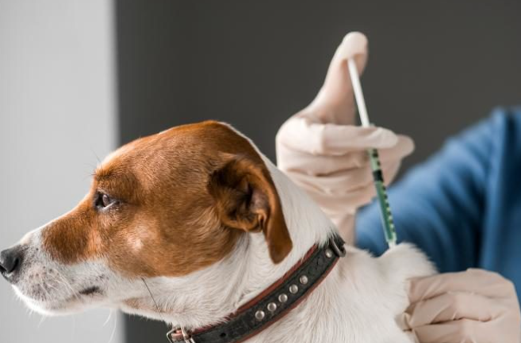

Comprendemos que las emergencias pueden ocurrir en cualquier momento. Por ello, estamos preparados para atender a sus mascotas en situaciones de emergencia. Nuestro equipo está disponible para brindar atención urgente y salvar vidas cuando más se necesita.
Diseñada facilitarte la búsqueda de veterinarios cercanos y brindarte acceso a reseñas honestas de otros dueños de mascotas. Nos comprometemos a conectar a los amantes de los animales con profesionales de confianza y brindar una experiencia única en el cuidado de la salud de tus mascotas.
Pensando en la salud y el bienestar de tus queridas mascotas, nos comprometemos a expandir y normalizar el seguimiento de sus calendarios de vacunación. Queremos hacer esta tarea más fácil y conveniente que nunca, proporcionando a los dueños de mascotas una herramienta integral que simplifique el proceso de seguimiento y garantice que sus compañeros peludos reciban las vacunas necesarias en el momento adecuado. Nuestra misión es crear una experiencia sin complicaciones, promoviendo la salud preventiva y brindando tranquilidad a los amantes de los animales.
